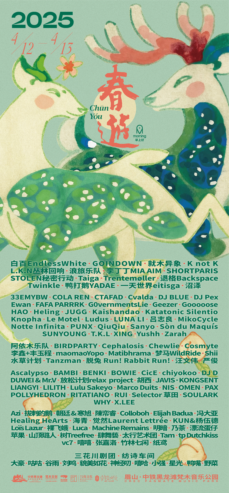

2025年的春游，在4月12日至13日再次回到黑龙滩湖畔。
这一年，春游已经拥有六个不同的表演区域。乐队、电子音乐、实验声音、表演和视觉艺术在湖边同时发生，除此之外，还有食物、酒、展览和各种临时出现的事情。春游已经从最初那个由朋友们一起搭起来的小型聚会，慢慢长成了一个更完整的音乐节。
也是在这一年，春游第一次 Sold Out。
对我们来说，这当然是一个值得记住的数字，但更重要的是，在十二年之后，依然有这么多人愿意从不同的地方来到这里，在湖边一起生活两天。很多人已经来了很多年，也有很多人第一次来到春游。
我们还是更喜欢把春游理解成一次见面，而不是一场演出。
音乐在六个舞台上发生，人却在舞台之间、树林里、湖边、帐篷旁和那些没有被安排好的地方相遇。
2025年的春游，大概就是这样。
CHUNYOU FESTIVAL returned to the lakeside of Heilongtan on April 12–13, 2025.
By this year, Chunyou had grown to include six different performance areas. Bands, electronic music, experimental sounds, performances and visual art all happened around the lake, alongside food, drinks, exhibitions and all kinds of things that appeared along the way. What began as a small gathering built by friends had gradually grown into a more complete festival.
It was also the first time in Chunyou’s history that the festival sold out.
For us, that number is worth remembering. But what matters more is that, twelve years later, so many people were still willing to travel from different places and spend two days together by the lake. Some had been coming for years. For others, it was their first Chunyou.
We still prefer to think of Chunyou as a place to meet, rather than simply a show.
Music happened across six stages, but people met in between them — in the trees, by the lake, beside the tents, and in all the places that were never part of the schedule.
That was Chunyou 2025.